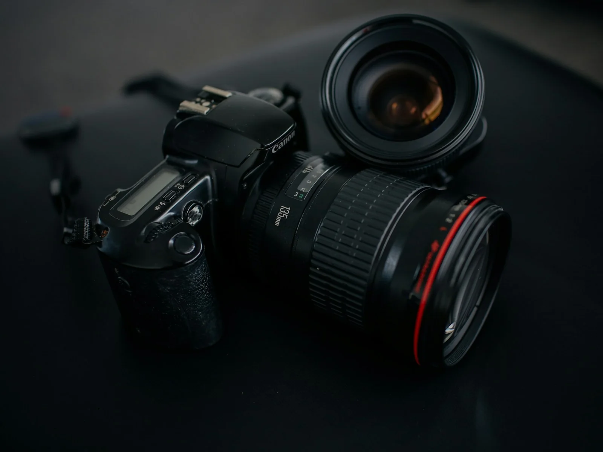

Creative & pre-production
Concepts, scripts, shot design, schedules, crew planning and production logistics.
ARGOS ADVISORS · VIDEO PRODUCTION
Strategy, production and post-production designed together—so one shoot can become a complete content system.
CAPABILITIES
Choose a single production service or build a complete campaign system.
Concepts, scripts, shot design, schedules, crew planning and production logistics.
Interviews, products, brand stories, events, podcasts, livestreams and social-first capture.
Editing, color, sound, graphics, captions, cutdowns, localization and delivery management.
POPULAR SERVICES
PRODUCTION
Narrative brand piece built around people, product, place and story.
PRODUCTION
Concept-led advertising production with production and post scoped together.
PRODUCTION
Product demonstrations, launches, detail films and performance-focused cutdowns.
PRODUCTION
Executive, founder, testimonial and subject-matter interviews with polished lighting and sound.
PRODUCTION
Interview-led case study film with supporting b-roll and platform-ready versions.
PRODUCTION
Keynotes, conferences, launches and activations with recap and highlight options.
PRODUCTION
Multi-camera live production for launches, talks, panels and hybrid events.
PRODUCTION
Multi-camera podcast capture with audio, graphics and social clip options.

PRODUCTION SYSTEM
A strong production plan starts with where the content will live. That shapes framing, coverage, scripts, runtimes, captions and the version list before cameras roll.
SAMPLE CASE STRUCTURES
B2B software
A sample case-study structure showing how a product launch can expand into a reusable campaign content system.
View structure ↗Professional services
A repeatable case-study format designed to turn one customer story into long-form and short-form assets.
View structure ↗Live event
A sample event-content system that extends the useful life of a conference beyond the room.
View structure ↗Executive visibility
A recurring production model for thought leadership without reinventing the process every month.
View structure ↗FROM BRIEF TO DELIVERY
Audience, goals, channels, timing and budget.
Creative, script, shot list, crew and logistics.
Production built around the actual deliverable list.
Edit, sound, color, graphics and reviews.
Masters, cutdowns, captions and archive handoff.
LOCATION PRODUCTION
Location planning can include crew travel, permits, local production coordination, logistics and specialized capture.
Explore production ↗POST
Build vertical, square, short-form, captioned and localized assets into the scope from the start.
Explore post ↗PROGRAMS
Recurring and campaign-based systems are demo offerings and should be scoped for the real business.
PROGRAM
Hero video plus cutdowns, stills, platform variants and launch-ready delivery.
PROGRAM
Planned production sprint for a quarter of campaign and social content.
PROGRAM
Recurring strategy, filming and post-production for ongoing brand channels.
PROGRAM
Event recap, speaker clips, short-form edits, stills and post-event content bank.
PROGRAM
Recurring executive/founder video content with interview, scripting and cutdowns.
PROGRAM
Launch film, demos, social variants and supporting photography.
PROGRAM
Multi-customer interview series with repeatable visual and editorial system.
PROGRAM
Leadership updates, training, culture and internal storytelling on a recurring basis.
FAQ
Brand films, commercials, product video, interviews, customer stories, events, livestreams, podcasts, social content and post-production.
Yes. Strategy, concepts, scripts, shot planning and pre-production can be scoped before filming.
Yes. Archive re-edit and post-only engagements can turn existing footage into new deliverables.
Yes. Deliverables can include vertical, square, widescreen, short-form and captioned versions when included in scope.
Location production can be scoped based on crew, travel, permits, insurance and local production requirements.
YOUR NEXT PROJECT
Select services, define the channels and tell us the timeline. The prototype saves the scope locally and pre-fills the brief form.